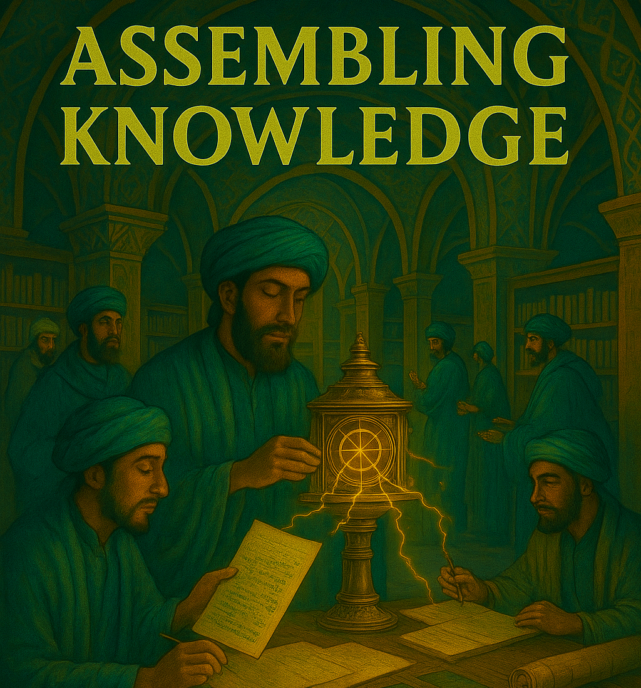

Week 3 — Data Wrangling & Debugging
Agentic CLI workflows, reviewing AI’s work, and the habits that make analysis reproducible
Week 3 — Data Wrangling & Debugging
Agentic CLI workflows on a real repo — project instructions, skills, tests, git, and the discipline of reviewing what the AI did

The longest hands-on session in the course. AI writes code fast, but output that looks right isn’t always right. This unit does two things at once: it makes you fluent with an agentic CLI tool working across a multi-file project, and it drills the habits that turn a clever assistant into a reproducible research companion — project instruction files, reusable skills, tests, git, and documentation — all wrapped in the discipline of reviewing what the AI did.
The whole session runs on one continuous case study — the Austrian Hotels dataset — so each step builds on the last.
Before you come to class (30–60 min)
✅ Pre-class checklist
python -m pip install pandas numpy matplotlibinstall.packages(c("tidyverse"))Learning objectives
By the end of this unit you will be able to:
- Explain why a terminal-native agent compresses the ask → run → inspect → fix loop compared with IDE/chat assistance — and where each still wins.
- Use a CLI agent to explore, clean, join, and aggregate a multi-file dataset, and to generate realistic synthetic data.
- Review and debug AI-written data code rather than trusting it blindly (row counts around joins, missing values, plausible-but-wrong results).
- Write a project instruction file (
CLAUDE.md/agents.md) so the AI follows your conventions automatically. - Build one reusable skill that automates a multi-step workflow.
- Turn assumptions into tests that return the failing rows, use git for traceable iteration, and apply a safety checklist for autonomous execution.
- Document data with a
README/DATA.md.
Session shape (200 min · 50·100·50)
| Block | Focus | Mode |
|---|---|---|
| Intro (50) | Why CLI; reviewing AI’s work; instruction files, skills, tests, git, autonomy | Talk + demo |
| Task (100) | Explore → clean → join → generate data → instructions → skill → tests → git → document | Individual / pairs |
| Discussion (50) | Silent failures, what tests caught, when to trust autonomy | Group |
Intro (50 min)
⚡ Why a CLI agent if Copilot already works?
In Units 1–2 you used VS Code + Copilot and Claude Code. The jump here is not “AI vs no AI.” It is IDE assistance vs terminal-native execution. With Copilot the loop is still manual:
- Ask for code in the editor → 2. run it in the terminal → 3. read the logs/errors yourself → 4. go back and re-prompt. Repeat.
A CLI agent compresses that loop:
- Files are already there. Claude Code sees your CSVs, scripts, and outputs directly — no uploading, no copy-paste. Just: “Look at these files and calculate average occupancy by city.”
- Code runs immediately. It writes code, executes it, sees the error, and fixes it — you get results, not just snippets.
- Context stays intact. It remembers your project structure and how files relate (
hotels.csvjoins tocities.csv) across many steps. - Iteration is fast. “Something looks wrong” → it investigates without you shuttling data around.
What stays exactly the same: prompting discipline, statistical thinking (you still define variables, assumptions, checks), verification habits (joins, units, missing values), and the iteration mindset. What changes is only the execution surface — you remain responsible for quality.
🔍 Trust but verify — the operating discipline
Reviewing AI-written code. Common failure modes to hunt for:
- Wrong join type — “How many rows before and after the join? Did we lose data?”
- Missing values — “Are there NaNs? Where did they come from?”
- Plausible-but-wrong — a result that looks right but isn’t. Ask: “Walk me through the calculation step by step.”
- Hallucinated code or stats. Always verify against the data.
Good habit, every time: Explain the code you just wrote. What assumptions did you make?
Always check: row counts after joins; summary statistics (do the means make sense?); a few random rows (do the values look realistic?).
📋 Project instruction files (CLAUDE.md / agents.md)
Instead of repeating preferences in every prompt, write them once in a file the harness reads automatically: CLAUDE.md (Claude Code), GEMINI.md (Gemini CLI), AGENTS.md/agents.md (Codex and others).
## Code Style
- Use tidyverse for R; pandas for Python
- Prefer ggplot2 / matplotlib with the viridis palette
## Data Standards
- Dates in ISO 8601 (YYYY-MM-DD); column names lowercase_with_underscores
## Analysis Preferences
- Always check for missing values before analysis
- Report sample sizes in every tableHierarchical loading: global defaults → project file → subfolder file. More specific files override general ones.
🛠️ Skills, tests, git & autonomy
- Skills — reusable instruction sets the agent runs on demand. A project skill lives at
.claude/skills/<name>/SKILL.md; a personal one at~/.claude/skills/<name>/SKILL.md. Then typing/<name>runs the workflow consistently. - Tests = guardrails. Turn assumptions into assertions across
raw → clean → analysis: schema/type, completeness (not-null), validity (0 ≤ occupancy ≤ 100), relationships (foreign keys exist), volume (row-count range). Prefer tests that return the failing rows, not just pass/fail. - Git — version control + AI = traceable, reproducible analysis. Branch, change, commit with a clear message, inspect the diff. The agent can also read git history to explain why a past decision was made.
- Autonomous execution — fine for trusted, repetitive pipelines with a clear success criterion; risky for new code or shared resources. Always: confirm the branch, write a success criterion, inspect
git diffafter, and run tests.
Task block (100 min · individual or pairs)
Running case: the Austrian Hotels dataset — messy data plus AI-generated code that has bugs. Work in a git project folder; commit as you go. Verify after every step.
🗂️ 1. Set up & explore as linked tables
Launch the agent in your project folder:
cd austrian-hotels-data
claude- “What files are in this folder? Give me a quick overview.”
- “Show me 5 sample rows from each CSV file.”
- “Read the hotels and cities files. How are they related? What’s the join key?”
Check: you can name each table, its grain, and the keys (city links hotels→cities; hotel_id links hotels→monthly occupancy).
🧹 2. Find the bugs & clean
- Discuss first: what are the crucial steps when cleaning tabular data?
- Use the agent to inspect the provided code: check row counts around joins, hunt missing values, standardise team/city names, dates, and keys.
- Produce clean tables in a new
/data_cleanedfolder.
🔗 3. Join, aggregate & investigate
Quick refresher: Joining Tables Guide.
- Join — “Join the hotels and cities data. How many hotels are in each province?”
- Aggregate — “What’s the average occupancy rate by city? Show a table sorted highest to lowest.”
- Investigate — “Which 5-star hotels have the lowest average daily rate? Something seems off — investigate.”
Tips: if something looks wrong, ask “Why did that happen?” or “Check the row counts.” Ask to see intermediate steps: “Show me the data after the join, before aggregating.” Then open a created table manually and look into it — how would you test and debug it yourself?
✨ 4. The power move — generate new data
One of the most useful CLI capabilities is generating realistic synthetic data. (The Austrian Hotels dataset itself was generated by an earlier Claude!)
I want to create a new CSV file called hotel_bookings.csv that shows what
percentage of each hotel's bookings come from different channels (Direct,
Booking.com, Expedia, HRS, Travel Agent). Percentages must sum to 100% per
hotel; 5-star hotels skew to Direct (35–45%), 3-star to OTAs (Booking.com 40%+);
add a commission rate (Direct = 0%, OTAs = 10–18%). Write Python code that uses
hotels_modified.csv as input, run it, and show me a summary.Then verify: do percentages sum to 100? Are the patterns realistic? Can you join it back to hotels? Be more specific to get realistic patterns. Brainstorm one more join table of your own (weather by city/month, staff by hotel, nearby attractions by city…) and generate it.
📋 5. Set conventions — write CLAUDE.md / agents.md
Create a project instruction file (style, data standards, analysis preferences — see the intro example). Re-run one analysis prompt and notice how the behaviour changes now that conventions are automatic.
🤖 6. Build a skill
Create .claude/skills/clean-hotels-data/SKILL.md:
---
name: clean-hotels-data
description: Clean and validate Austrian Hotels data for analysis.
---
Run the Austrian Hotels cleaning pipeline:
1. Check missing values in `data/hotels_raw.csv`
2. Run the cleaning script
3. Verify output dimensions in `data/hotels_clean.csv`
4. Generate a short data-quality reportNow typing /clean-hotels-data runs the workflow consistently. What other repetitive tasks could become skills?
✅ 7. Write tests (guardrails)
Ask the CLI to generate and run ~5 tests for the cleaning pipeline:
hotel_idis unique in the cleaned table- key fields not null (
hotel_id,city_id,date) city_idvalues exist in the city lookup table (foreign key)occupancy_ratebetween0and100- row count within an expected range after cleaning/joining
Review one failing test together, fix the underlying cause, and rerun. Prefer tests that return the failing rows so you can inspect those exact rows first.
🌿 8. Git + a peek at autonomy
- “Create a branch
hotels-robustness-checks, run the robustness checks, and prepare a summary of changes.” Then inspect the diff and explain every changed file to a partner. - “Look at the git history for the cleaning script. Why did we change the outlier threshold?” — the agent reads commit messages and diffs.
- Autonomy, carefully. A non-interactive run looks like:
claude -p "Run the /clean-hotels-data skill and the robustness checks, then summarize changed files"Apply the safety protocol: right branch, written success criterion, git diff after, tests after. Only on familiar, verified pipelines — never on new code or shared resources.
📄 9. Document
Write a README / DATA.md: each table, its source, schema, and known issues. This is what lets someone else (or future you) rerun the whole thing.
Operation tips
- Use git-based projects. CLI tools are file-based, so git gives safer iteration and easy rollbacks.
- A reliable three-step loop: Inventory (“What files are here?”) → Plan (“What steps should we run?”) → Execute and verify.
- Read error messages before re-prompting — often the agent fixes errors itself if you just let it run.
Bottom line — CLI shines for: complex multi-file pipelines (raw → clean → analysis → exhibits), reproducible workflows others can run, large datasets/documents needing context, and iterative analysis where the AI tests and debugs autonomously. IDE/chat is still better for: quick one-off questions, exploratory methodology conversations, and moments when you want tight control over each step.
Discussion (50 min)
- What failed silently — looked fine but was wrong? How did you catch it (or not)?
- Which test caught the most? Which two tests would you add to your own pipeline first?
- How did
agents.md/ skills change the AI’s behaviour? - What did you learn from generating synthetic data — and where could it mislead?
- When is autonomous execution appropriate vs risky in a research context? How do you balance speed with verification?
Delivery
📦 What to hand in (Sunday 23:55)
- Fixed repo with: a
CLAUDE.md/agents.md, cleaned data in/data_cleaned, at least one AI-generated join table (with a note on how you verified it), a passing test suite (with a note on the failing test you fixed), the/clean-hotels-dataskill, and aREADME/DATA.md. - A short note: the most important bug you found and how you caught it; plus one sentence on how the CLI workflow felt different from Copilot/chat.